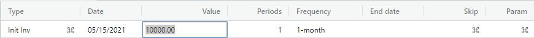
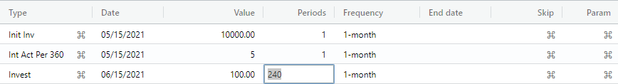
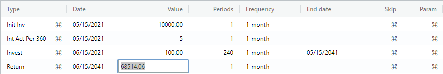
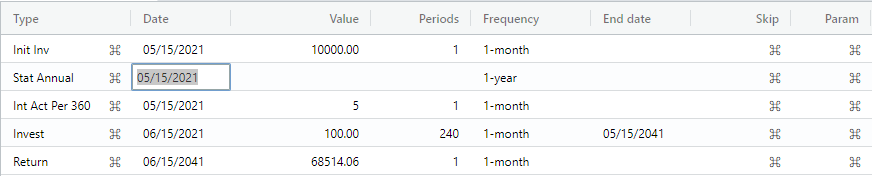

Investment tutorial overview.
This tutorial presents a typical investment intended for an individual's retirement that starts with an initial investment amount and a small monthly periodic investment (i.e., contribution). In addition, an annual statistic event is created to accumulate annual totals for the investment.
Please enter the dates given in this tutorial to avoid any automatic date adjustments (e.g., leap year) that can affect the final cashflow balance.
Note: This tutorial meant is for the default en-US locale. If another locale is chosen, the AmFn Wasm will handle the date format, decimal format, currency format, and spoken language resources for that locale.
Create investment cashflow.
Let's begin by selecting the File -> New Cashflow menu item. A dialog is displayed asking you to enter a cashflow name and select a template for this cash flow. Please enter the name of your cashflow, select "Standard investment", and press the Submit button.
A new cash flow window is created with an "Init Inv" (i.e., initial investment) event selected for you. Press the Enter key until you are positioned in the "Date" column and enter 05/15/2021. Press the Enter key until you are positioned in the "Value" column and enter 10000 (i.e., our initial investment is ten thousand)

Create interest change.
Press the Enter key until a new interest change event is created. Press the Enter key until you are positioned in the "Value" column and enter 5 (i.e., a 5 percent interest rate).
Create normal invest.
Press the Enter key until a new normal invest event is created. Press the Enter key until you are positioned in the "Value" column and enter 100 (i.e., one hundred). Press the Enter key until you are positioned in the "Periods" column and enter 240 (i.e., 240 monthly events = 20 years).
Note: The balance on the status line now reflects the amount that will be available after 20 years, given the current interest rate. You can simply change the initial investment, interest rate, periodic investment amount or periods to immediately see how the investment is affected on the status line balance.

Create normal return.
Press the Enter key until a new normal return event is created. Press the Enter key until you are positioned in the "Value" column. Press the Calculate button to apply the remaining balance to the return event

Create annual statistic.
Finally, press the Insert button and select annual statistic and press the Submit button to create an annual statistic event. Press the Enter key until you are positioned in the "Date" column, enter the same date as the initial investment, and press the Enter key.

The annual statistic event is aligned for you to the user defined start of the fiscal year and is automatically repeated until the end of the cash flow.